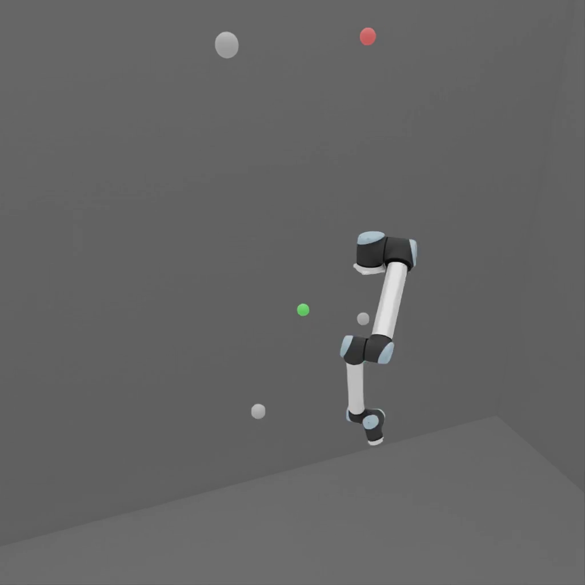

jacobian_ik (FET022 Driven Joints)#
Property |
Value |
|---|---|
Test name |
jacobian_ik |
Feature(s) |
FET_022_PHYSX, FET_022_NEWTON, FET_022_ISAAC |
Engine |
Kit / Isaac Sim (>=2024.2.0) |
Test version |
1.4.0 |
Summary#
Solves a set of FK-sampled end-effector targets using an in-house damped least-squares Jacobian solver and verifies that the solver converges within the iteration budget and position tolerance.
What Pass Guarantees#
A passing result confirms that the articulation’s kinematic structure supports Jacobian-based IK convergence without a Lula descriptor, and that the end effector can reach a representative sample of configurations within the position and orientation tolerances. Reviewers, PMs, and OEMs can trust that the robot joint structure is well-conditioned for numerical IK and that joint limits do not prevent convergence to sampled configurations.
What It Checks#
The test samples num_targets (default 5) end-effector targets by performing
forward kinematics from random joint configurations. These FK-sampled targets are
guaranteed to be reachable by construction. The damped least-squares (DLS)
Jacobian solver is then run from a neutral starting configuration for up to
max_solver_iterations (default 150) iterations per target with
damping_lambda (default 0.05). A target is considered reached if the final
end-effector position error is within position_tolerance (default 0.05 m) and
the orientation error is within orientation_tolerance_deg (default 10 degrees).
The test fails when the fraction of targets reached falls below min_pass_rate
(default 0.40). The test skips when no end effector can be discovered on the
articulation. The test does not apply to gripper-type robots.
How It Works#
The test uses an in-house DLS Jacobian solver that operates directly on the articulation state. It does not require a Lula robot descriptor, a URDF, or any external motion-planning extension. The Jacobian is computed numerically from the live physics-link pose after finite joint perturbations at each iteration step. The pose is read from the active backend’s articulation tensor view rather than from authored USD transforms, because Newton does not write simulated link motion back into the USD stage.
PhysX uses a finite_difference_epsilon of 1e-5 rad and one propagation step.
Newton’s float32/CUDA state path uses
newton_finite_difference_epsilon (default 1e-3 rad) and
newton_jacobian_propagation_steps (default 2). These settings make the
numerical derivative observable after a Newton state write; target generation,
solver tolerances, iteration limits, and the minimum pass rate remain shared.
During physical playback, PhysX retains the existing 0.67 s interpolation and
0.3 s hold. Newton uses the configurable newton_interpolation_seconds
(default 1.25 s) and newton_hold_after_reach_seconds (default 1.0 s) so its
GPU articulation controller receives a gentler simultaneous multi-joint input.
The test logs target-versus-live joint error in radians during playback. These
timing settings do not change position, orientation, or pass-rate tolerances.
FK-sampled targets are produced by setting each joint to a random position within its limits, reading the resulting end-effector pose, and resetting the articulation to the neutral configuration before starting the IK solve. This sampling strategy ensures all targets are kinematically reachable, so low pass rates indicate solver convergence problems rather than workspace sampling issues. The run also requires at least two spatially distinct reachable targets when multiple configurations are requested. This prevents a stale pose source from passing every target at the starting position without robot travel.
For SCARA-type robots, the targets are sampled on an FK-reach ring rather than a sphere, to reflect the planar nature of the SCARA workspace.
Failure Cases#
Symptom |
Likely cause |
|---|---|
Pass rate below 40 percent |
Jacobian becomes singular near the joint configuration used as the IK starting point; joint limits are too tight to allow the solver to converge |
Solver exceeds iteration budget without converging |
Damping lambda too high (over-regularized); target is near a singularity; stiffness or range asymmetry |
Test skipped |
No end effector discovered on the articulation; robot type is a gripper |
Internal live-link error |
The discovered marker cannot be resolved to a simulated articulation link, or sampled link poses do not change |
How to Fix#
If the pass rate is low, check that the joint limits in the USD asset are wide enough to allow the solver to maneuver away from the neutral configuration. Very tight limits around the neutral pose can trap the solver in a local minimum.
If the solver consistently fails to converge, verify that the articulation is not in a singular configuration at the start of each solve. A neutral configuration that places the robot in an extended or folded singularity will cause systematic Jacobian IK failures regardless of the target.
If the test skips due to no end effector being discovered, verify that the asset’s USD hierarchy includes an end-effector prim at the expected location in the kinematic chain.
Expected Result#

The robot moves through a sequence of configurations, each corresponding to an FK-sampled target. At each configuration, the end effector is close to the target pose. On a passing run, the robot does not get stuck at the neutral configuration or oscillate during the solve.
Notes and Caveats#
This test is distinct from the ik_target_reach test. The ik_target_reach test uses the Lula solver (which requires a robot descriptor) and samples targets on a Fibonacci sphere. The jacobian_ik test uses the in-house DLS solver (no descriptor required) and samples targets by forward kinematics. The two tests complement each other: ik_target_reach validates Lula descriptor quality, and jacobian_ik validates intrinsic joint structure and kinematic well-conditioning.
This test does not apply to gripper-type robots. Grippers have limited kinematic degrees of freedom that do not support 6-DOF end-effector IK. The test skips on gripper assets.